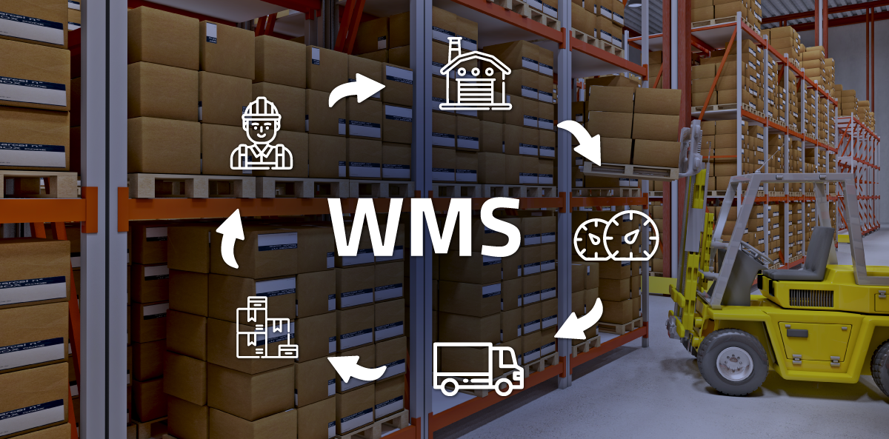

O WMS é a sigla para Warehouse Management System, ou, Sistema de Gerenciamento de Armazém. Em geral, são softwares ou aplicativos desenvolvidos para ajudar a gerir, otimizar e automatizar os processos logísticos em especial, nos depósitos, armazéns e estoque.
WMS e seus benefícios
Até bem pouco tempo atrás, era normal que as pessoas fizessem compras pela internet e levassem dias ou até semanas para recebê-las. Certamente, essa era uma das desvantagens do e-commerce em relação às lojas físicas. Por isso mesmo, os empreendedores digitais buscaram novos caminhos para mudar tal realidade.
Uma das maneiras encontradas foi implementar o uso de tecnologia para aprimorar os processos e tornar cada passo mais eficiente. Por meio de uma ferramenta de WMS, por exemplo, os procedimentos logísticos foram otimizados e os resultados são cada vez melhores.

Veja abaixo um video com mais detalhes sobre o assunto
QUER APROFUNDAR AINDA MAIS?
Descubra aqui mais detalhes sobre nosso produto, opiniões de clientes, exemplos de integrações reais, artigos relacionados, etc.